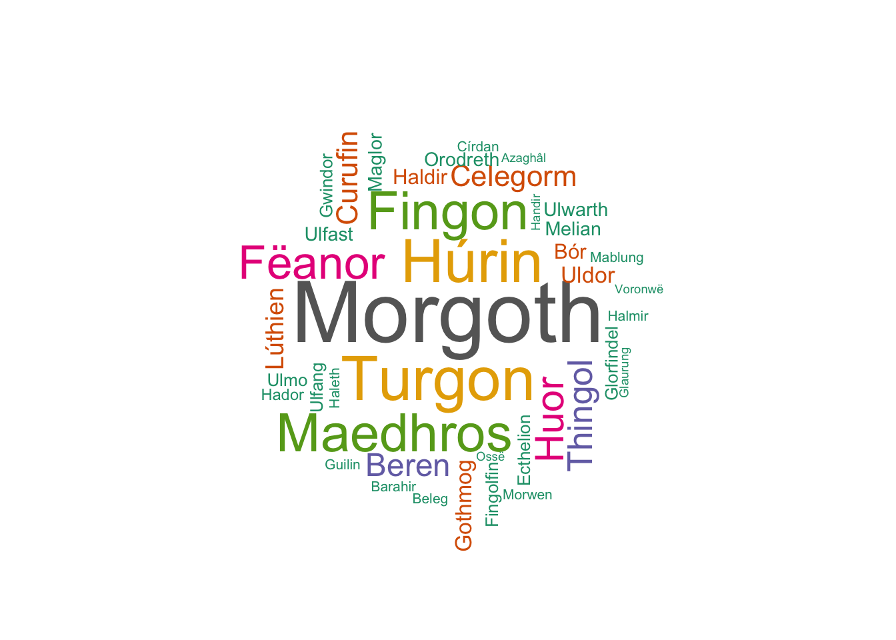

Code
set.seed(1)
wordcloud::wordcloud(
words = wordcloud_data$word,
freq = wordcloud_data$freq,
min.freq = 1,
max.words = 200,
random.order = FALSE,
rot.per = 0.35,
colors = RColorBrewer::brewer.pal(8, "Dark2")
)
Haniah Kring
August 2, 2023
This project documents the visualizations I made for use in my Silmarillion Character Shiny Dashboard, which you can find here.
Word clouds are a way to visually represent text data and assign importance to each word. The word cloud below shows every character in J.R.R. Tolkien’s The Silmarillion where the size of their name is determined by how often they are mentioned throughout the text.
Force networks visualize connections between nodes and edges. More practically, nodes are people, places, things, or ideas, while edges are the associations between the aforementioned items. Here, I show all the characters in the chapter “Beren and Luthien” and their relationships. Characters who are highly associated together are grouped by colour. Large nodes are main characters in the chapter, while small nodes are minor characters or mentions.
Chord diagrams help represent flows between sets of entities. Similar to the force network above, the diagram below shows characters and their relationships.
Dendrograms can be used in two ways -
Here, I am using a dendrogram to show “closeness” between the characters.